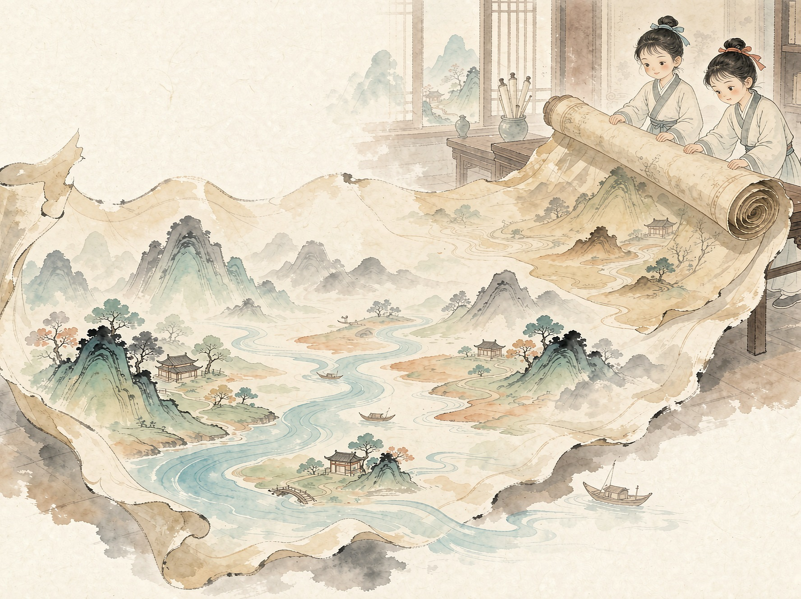

元灭金，绝宋世
元灭金，绝宋世：承接上一课「辽与金，皆称帝」。
蒙古崛起建立元朝，先攻灭金国，而后南下覆灭南宋，终结赵宋一代的世系传承。
宋、金南北对峙的多元并立格局消散，天下重归大一统。
多国对峙、疆土分裂、彼此抗衡为阳；元朝整合四方，混一华夷，疆域收束归一为阴。
对比：辽与金，皆称帝 / 元灭金，绝宋世
上一句讲多朝并立、各称帝号，是南北混杂的相持局面；这一句是变局的终章：一股新力量自漠北兴起，次第扫灭北方的金、江南的宋，结束长达数百年多政权对峙的格局。之前是并峙共存、互相牵制；至此旧的帝统相继断绝，换一个新的大一统体系承接天下。
对比前文阴阳太和：元朝混一疆域，打破宋、辽、金长期对峙的壁垒，在地理与政权形式上达成合一。但这种合一，是以武力征伐为根基，治理上族群分等、风俗制度并存，疆域合而人心未洽。只是外在格局的拘合，尚未抵达不同族群彼此和顺、浑然无隔的太和之境。太和不是单纯版图统一，更贵在文化、人心的交融相安。
勘破俗见：两类常见偏差。其一，以为宋朝是被元朝一击而亡，衰败非常突然；南宋的衰亡是长期积弊延续的结果，是数十年攻防消耗、国力持续衰减的因缘汇聚，并非一朝突发。其二，以为元灭宋代表华夏文脉就此断绝；政权世系断绝不等于文脉断绝，儒家典籍、诗词礼乐、民间教化依然在民间流传延续。契合般若范式：佛说元灭金绝宋世，即非元灭金绝宋世，是名元灭金绝宋世。王朝世系、版图归属、正统更替，皆是因缘假名；兴灭更替，只是众缘聚散显现的生灭之相，没有哪一朝的帝统是永恒不变的实有。
后来蒙古建立元朝，先灭掉了金国。
之后大军南下，终结了宋朝的世代传承。
持续很久的南北对峙局面就此结束，天下重新统一。
一个王朝落幕，并不代表文明随之消失。
版图的合一容易，不同族群之间彼此理解、和睦相处，才更难得。


落到心上理解
宋、金对峙的格局，依托彼此力量的平衡；平衡一旦被打破，旧格局便随之消散。
朝代世系、疆域版图、政权名号都是器相；文脉传承、人心和顺、文明包容才是本体。
不因一朝的兴亡而生分别悲喜，看见兴亡只是因缘流转，文脉自有延续的力量，即是无住观照。
南宋灭亡，华夏文脉就此断绝
王朝世系断绝，儒家、礼乐文脉在民间持续传承
元朝统一，代表各族人心立刻和睦
版图形式合一，族群风俗、治理隔阂仍长期存在
金宋的覆灭，只是一次偶然的战争结果
是国力、军备、财政、地缘多重因缘长期演化的果
- 元朝兴起，先灭亡金国，之后终结宋朝的世系。
- 持续数百年多国对峙的时代宣告结束，天下重归统一。
- 政权有兴有灭，但是根植人心的文化，可以跨越朝代延续下去。
- 外在的统一只是起点，内在的理解与包容，需要长久经营。
一、勘俗见。元朝同样是中国历史的正统一环，是多民族融合历史的重要阶段。
二、现代对照。原本各自独立的群体，合并到同一个大体系之中，仅仅完成合并是不够的，还需要互相尊重、彼此磨合。
三、承接常变主线。王朝兴亡、版图分合（可变之相）；文明薪火、包容共生（不变之常）。
四、承接教与学二分。元代虽有儒道释并存的宽松氛围，也重视经学刊刻；但教化推行的方式、受众圈层，和宋有很大不同。
承接选择力练习：区分政权更迭和文明传承，王朝有生灭，文明的内核可以跨越时代接续不绝。
元灭金，绝宋世
一字义与句读
元：元朝，蒙古所建大一统王朝。灭：攻灭。绝宋世：终结赵宋世代相传的帝统。
全句释义：元朝兴起，先攻灭金朝，再南下覆灭南宋，终结了宋朝的世系传承，四海归于一统。
二命题考辨
表层因缘
蒙古先西征、北讨，而后南下，联宋灭金；再经过长期襄樊之战，击溃南宋防御体系，崖山之后宋统终结。持续百年的宋、金、西夏多方对峙格局，随元朝的征服而落幕。
深层因缘
宋先天重文抑武，边防防御体系长期被动，财政与军备的结构性矛盾代代累积；金后期内耗严重，国力衰败。漠北游牧力量整合之后，形成强大的军事势能，打破东亚长久的力量平衡。武力促成版图的统一，但是元朝治理采用族群分等之制，农耕、游牧两套治理并行，没有形成一套深度融合、普惠万民的治道。
现代对照认知
依靠外部强力完成的整合，容易快速成型；但缺少内在共识的支撑，长久运行之中，隔阂与矛盾会持续发酵。
般若范式互参
兴亡更替、王朝正统、版图分合，皆是因缘假名。
联动三才五蕴太极空杯模型：文明薪火、兼容涵容是杯中之空（本体）；王朝国号、世系帝统、疆域边界是器相（流转之相）。器相有生有灭，聚散无常；承载文明的空性，可以不断接纳、容纳不同族群的文化。
呼应「本乎数」：分久必合，数百年多元对峙的阳动之后，大势转入一统收敛之阴。
延伸义理：
《金刚经》：凡有为相，皆属生灭，一王朝的断绝，只是因缘的变迁，非文明的断灭。
《道德经》：大者宜为下。版图虽大，若不能谦和涵容，难得长久安定。
《庄子》：物之生也，若骤若驰。朝代兴废，如同四时流转。
三跨典互参（老庄、般若对照）
《道德经》：大者宜为下。能下则能容，能容则合可久。
《庄子》：物之生也，若骤若驰，无动而不变。王朝兴废如四时流转。
串联前文：辽金并峙而帝号纷出，终以一股强力收束，天下复归一统。
四和前面课程的张力
次第链条继续延伸：
……辽与金，皆称帝 → 元灭金，绝宋世
呼应「曰仁义，礼智信」：征伐可以取得天下，仁义教化才是维系长久人心的根基；
呼应「教之道，贵以专」：元代儒教不绝，却未能以教化贯通各族，教化未能周遍；
呼应「玉不琢，不成器」：此段历史打磨知见——版图之合易，人心之和难。
元朝混一四海之后，对儒家经学、礼乐制度采取了怎样的取舍态度？
崖山之后，民间的宋遗民文化，对后世的认知产生了哪些长久影响？
依靠武力完成的大一统，天然会存在哪些治理层面的短板？